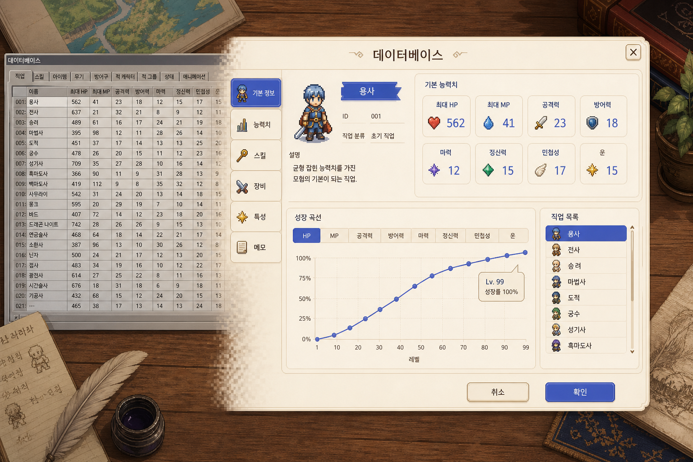
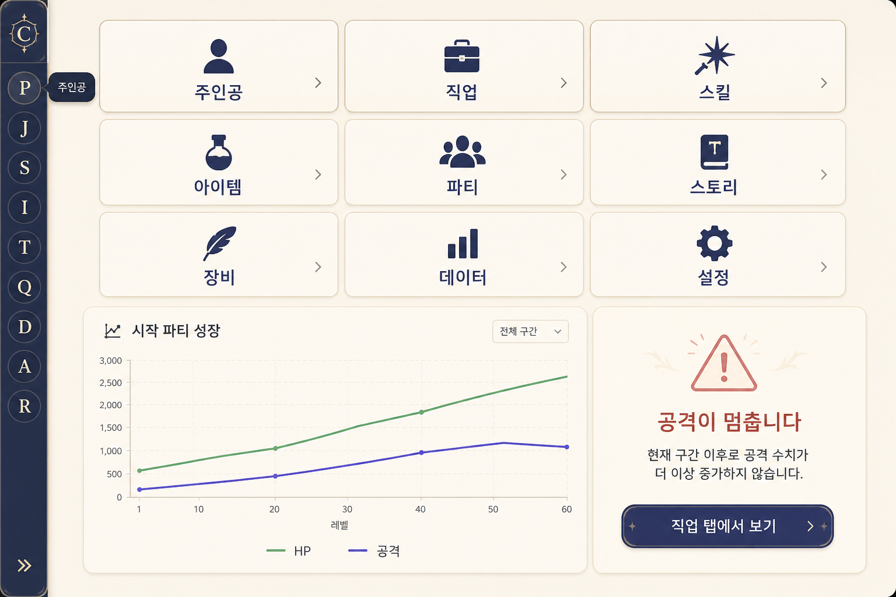
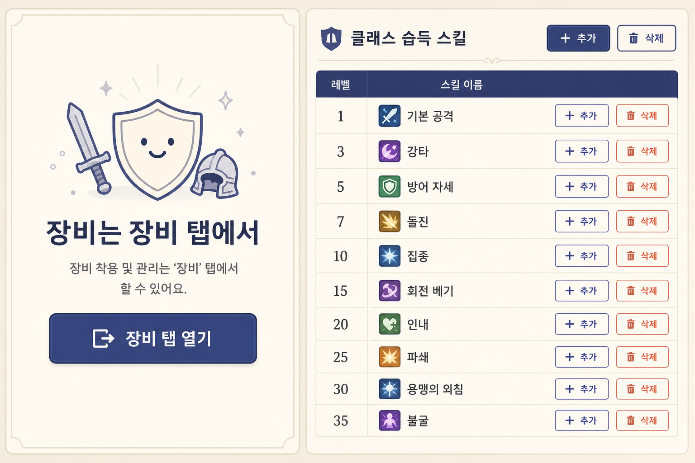
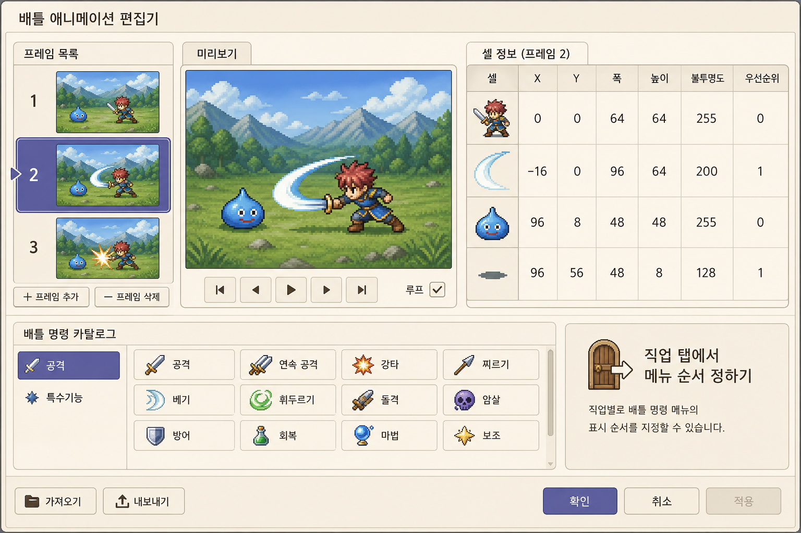
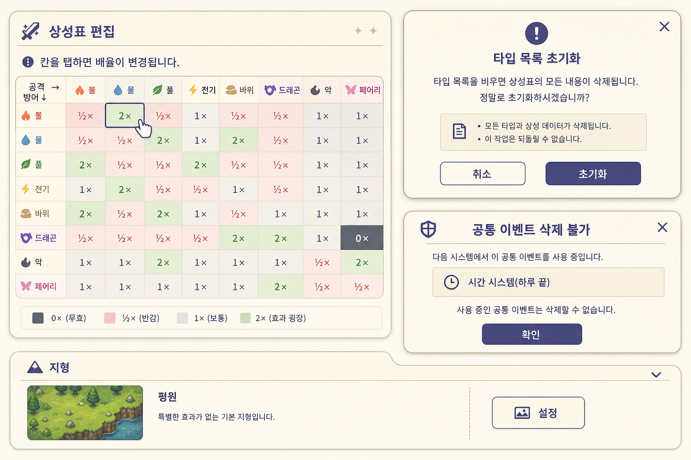

RM 폼을 복원하는 대신, 사람이 매일 만지는 칸을 클릭·점프·한글로 갈아끼웠습니다. 저장 모양과 탭 이름은 그대로입니다.
화면만 바꿨습니다. 프로젝트 JSON, 더티 세 버튼, 모달을 다시 열지 않는 점프, 기존 필드 이름은 계약입니다.
개요는 장식이 아니라 입구입니다. 접힌 도크에도 이름이 남습니다.

아이템 탭의 가짜 장비 폼을 치우고, 직업 습득 스킬을 진짜 행으로 고칩니다.

프레임을 눌러도 그림이 안 바뀌던 길을 고쳤고, 전투 명령 탭을 한글로 직업에 연결했습니다.

상성표는 미리보기가 아닙니다. 하루 끝 이벤트는 함부로 지워지지 않습니다.

타일셋 그래픽은 설정… 피커로 고르고, EasyRPG 칩셋·업로드 chipset/tileset은 480칸·통과 배열을 맞춥니다. 사이드바 그룹(파티 / 전투 / 수집 / 맵 / 시스템)은 표준·전문가 모드입니다. 초보자는 짧은 공통 탭만 둡니다. 몬스터·적 무리·전투 지형은 전투에, 종족은 수집에 있습니다.
개요 칩 · 도크 이름 · 시작 파티
아이템 문 · 직업 스킬 행
애니메이션 프레임 · 전투 명령
상성 · 하루 끝 · 지형